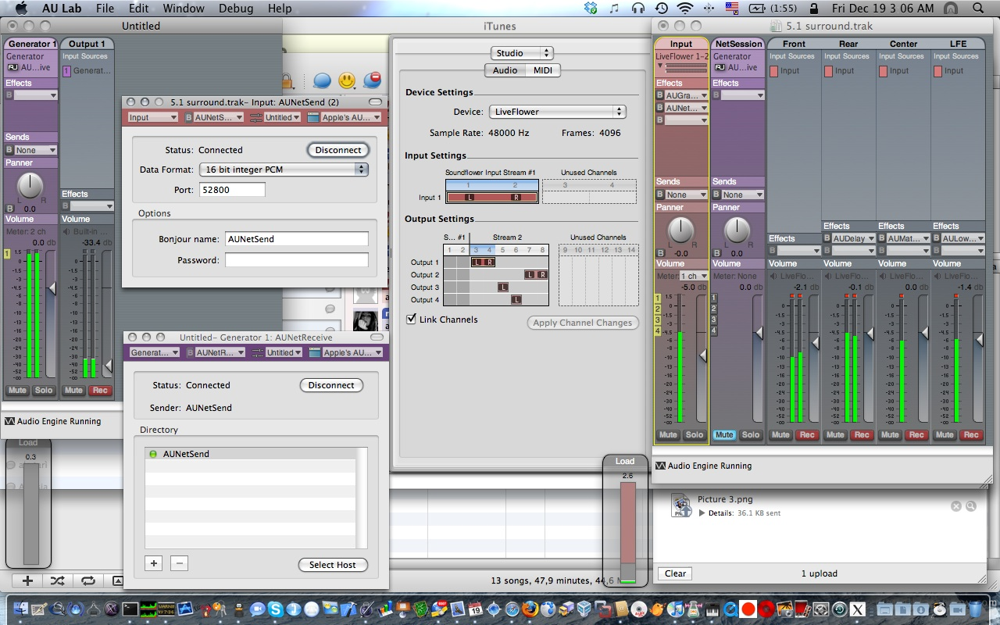

Section: number 42
Il vero sistemista
di Franco Lanza
Il vero sistemista e’ un po’ come il meccanico di una volta, quello che se gli portavi la macchina per rifare la convergenza e quando arrivavi sentiva che il minimo non andava bene, ti faceva la convergenza, e giustamente la pagavi, ma poi ti sistemava anche il minimo e non ti chiedeva nulla, lo faceva perche’ non sopportava di sentire una macchina che non era a punto come si deve.
Era quello che da ogni minimo e impercettibile rumore indovinava subito qualsiasi problema, anche quello di cui il cliente non si era ancora accorto.
Era quello che dopo cena a casa con la famiglia, tornava in officina, dove potevi vedere le luci accese fino a notte tarda, perche’ stava lavorando al “suo” gioiello, una qualche macchina semi d’epoca recuperata chissa’ dove che con passione piano piano sistemava fino a farla tornare nuova.
Ecco, il sistemista e’ come quel meccanico, e le sue auto sono i server.
Fonte: VeteranUnixAdmins
Learning about world cultures via Google Autocomplete
Out of curiosity, I was looking how a browser interacts with the Google Instant backend. While looking the HTTP exchanges via Firebug, I first asked myself why they’re encoding HTML and JS with \xYY escape sequences, then why the very same JS functions are sent back and forth on every request, and later I stumbled upon the google.com/s?q=QUERY JSONp service.
Give it a query, and it’ll return the suggested related phrases that are used to build the menu under the search input while using suggestions and/or instant (didn’t dig too much in all the other parameters).
Anyway, what’s interesting is that, of course, the suggestions are customized on a per-country basis. To show the differences explicitly let’s ask the service the simplest query possible, a:
For Italy you’ll get:
$ curl http://www.google.it/s?q=a
window.google.ac.h(["a",[["ansa","","0"],
["alice","","1"],["alitalia","","2"],["alice mail","","3"],
["apple","","4"],["agenzia delle entrate","","5"],
["audi","","6"],["aci","","7"],["autoscout","","8"],
["atm","","9"]],"","","","","",{}])
hum, let’s scrap the JSONp and parameters out:
$ curl -s http://www.google.it/s?q=a | ruby -rjson -ne 'puts JSON($_[19..-2])[1].map(&:first).join(", ")'
ansa, alice, alitalia, alice mail, apple, agenzia delle entrate, audi, aci, autoscout, atm
For the US you’ll get:
amazon, aol, att, apple, american airlines, abc, ask.com, amtrak, addicting games, aim
UK:
argos, amazon, asda, asos, autotrader, aa route planner, aol, apple, amazon uk, aqa
Ireland:
aer lingus, aib, argos, amazon.co.uk, argos.ie, asos, aa route planner, amazon, aldi, aib internet banking
Lastly, because I’ve been there lately and it has been a profound experience, Cuba:
asus, antonio maceo, amor, amigos, ain, antivirus, avira, alba, aduana, as
I’m sure @nhaima is smiling while seeing these words, because hell yeah, over there they really google antivirus software (avira is one of them) a lot because it’s a world without the Internet, thus without free software: you’re condemned in using Windows stuff, and you take what you pay for. Antonio Maceo has been an hero of the 19th century revolution, and it’s in the heart of Cuban people. Amor, Amigos! :-)
Anyway, looks like that simple queries like this really give an insight on what a population thinks and/or needs, because they’re surely generated by the search trends, thus are the “most searched words”. Am I discovering hot water? Maybe, but it was funny to rediscover it. Just make sure not to hammer the /s service with too many requests, because they’ll anyway be handled by the same cluster of machines, thus you’ll be banned early (I’ve been :-p).
It just takes one person to get the party started
- The sad conclusion: «humans are such herd animals»
- The good conclusion: «virality has always existed, it’s not an invention of Web2.0. Social networking is just a powerful tool for everyone that wants to change the world»
- The mean conclusion: «how much does it take to get people from their computers to the real world after a virtual “heads up” by some “dancing man”?»
- More conclusions: read the comments on this video on reddit and on youtube.
The best way to begin a new day
XFS internal error XFS_WANT_CORRUPTED_RETURN at line 295 of file fs/xfs/xfs_alloc.c. Caller 0xc018066c
[<c017fed0>] xfs_alloc_fixup_trees+0x1b0/0x2e0
[<c018066c>] xfs_alloc_ag_vextent_near+0x31c/0x9c0
[<c018066c>] xfs_alloc_ag_vextent_near+0x31c/0x9c0
[<c0180187>] xfs_alloc_ag_vextent+0xf7/0x100
[<c01824fe>] xfs_alloc_vextent+0x35e/0x420
[<c019015d>] xfs_bmap_alloc+0x80d/0x12b0
[<c0111254>] try_to_wake_up+0xa4/0xc0
[<c02cf248>] schedule+0x308/0x5c0
[<c01939c4>] xfs_bmapi+0x514/0x1470
[<c0130069>] find_lock_page+0x29/0xe0
[<c013013c>] find_or_create_page+0x1c/0xb0
[<c01d9116>] kmem_zone_zalloc+0x26/0x50
[<c01a2296>] xfs_dir2_grow_inode+0xf6/0x3c0
Girl Geek Dinners Workshop @Apple Store, 16 May 2009, Rome
«Women! The knife grinder is here!» – Apart from funny jokes ;) the italian Apple Store together with Girl Geek Dinners Roma organized on May 16, 2009, a workshop about mobile lifestyle (focusing on the iPhone, of course).
Let’s start from the beginning: what are the Girl Geek Dinners? Linda explained to the audience (nearly 20 people) that a geek is a person passionate about technology in a broader sense: the GGD is a group devoted to aggregate women interested about the internet, new medias and technologic lifestyles. Women are often underestimated in geek communities, and this embarassing clichè generated a lot of discussion in the past, and it’s still unsolved (in my opinion).
The GGD italian group was born in 2007 in Milan, and then arrived to Rome in 2008, and is also present in Bologna and in the Marche and Emilia-Romagna states.
So, the GGD group tries to generate a “critical mass” of geek women, to abolish a stereotype that “computer programmers / power users” are only men: in GGD events boys listen and girls talk, [ .. ]
A tweeting (geeky) parrot
I’m searching for a new pet. We already have two lovely cats, but after feeling how alive an house can be with many pets (after a beautiful night @ il quadrato mansion), I’m thinking about having another one to grow and love.
But, what kind of geek am I, if I don’t add a nerdy bit to it? So, after the brain twitter interface about which we talked about so much in the last days, this evening a quite random funny thought has stumbled into my mind: what about getting a grey parrot, grow it, learn it to talk, and letting him .. well, tweet his words using a speech recognition system put right aside its bar and linked to a twitter account? How weird would be that?! :D
Thinking deeply, the weirdest thing is that in 2009, a tweeting parrot makes me think about a “parrot with access to twitter” .. and not a bird emitting its natural verse. Am I overloaded by this social media thingie? Should I take some vacation?
I guess. But not right now. The first italian facebook developer garage is right two days away..
:)
Notice to all employees
( As read on full-disclosure )
Subject: Notice to all employees
Date: Tue, 24 Feb 2009 13:06:14 -0500
Dear employees,
Due to the current financial situation caused by the slowdown
of the economy, Management has decided to implement a scheme
to put workers of 40 years of age and above on early retirement.
This scheme will be known as RAPE (Retire Aged People Early).
Persons selected to be RAPED can apply to management to be eligible
for the SHAFT scheme (Special Help After Forced Termination).
Persons who have been RAPED and SHAFTED will be reviewed under the
SCREW programme (Scheme Covering Retired Early Workers). A person
may be RAPED once, SHAFTED twice and SCREWED as many times as
Management deems appropriate.
Persons who have been RAPED can only get AIDS (Additional Income
for Dependants & Spouse) or HERPES (Half Eamings for Retired
Personnel Early Severance).
Obviously persons who have AIDS or HERPES will not be SHAFTED or
SCREWED any further by Management.
Persons who are not RAPED and are staying on will receive as much
SHIT (Special High Intensity Training) as possible. Management
has always prided itself on the amount of SHIT it gives employees.
Should you feel that you do not receive enough SHIT, please bring
to the attention of your Supervisor. They have been trained to
give you all the SHIT you can handle.
Sincerely,
The Management
( I hope you enjoyed this :) There is also an USAF version from 1997 ).
Continuous evolution
releases$ du -sch *
7.6M 20081209132347
7.0M 20081209133350
7.6M 20081209144343
7.1M 20081209145133
7.1M 20081209151843
7.1M 20081209163013
7.1M 20081209175506
7.1M 20081209183553
7.1M 20081211122939
8.6M 20081212190026
8.3M 20081212201852
8.3M 20081212203943
8.3M 20081212205430
8.3M 20081213014847
8.3M 20081213020357
8.4M 20081213163428
8.4M 20081213173633
Playing with Audio Units via AU Lab to gain 5.1 surround

The right session shows a document open on an aggregate audio device between soundflower (2ch) and a Creative SBLive with 6 channels: the flower receives sound input from iTunes and routes it to the card channels, using all the 6 speakers.
Making the CCacheServer Kerberos Ticket server actually Work(tm) on OSX
If you’re wondering why the CCacheServer daemon, that caches in memory Kerberos tickets obtained via kinit(1) is NOT starting .. that’s because of a strange bug regarding the LimitLoadToSessionType specified into the agent .plist, located into
/System/Library/LaunchAgents/edu.mit.kerberos.CCacheServer.plist
on OSX 10.5 systems.
You simply have to comment out these two lines:
The mayonnaise jar and two glasses of wine
English version below.
“Quando ti sembra di avere troppe cose da gestire nella vita, quando 24 ore in un giorno non sono abbastanza, ricordati del vaso della Maionese e dei due bicchieri di vino…”
Un professore stava davanti alla sua classe di filosofia e aveva davanti alcuni oggetti.
Quando la classe incominciò a zittirsi, prese un grande barattolo di maionese vuoto e lo iniziò a riempire di palline da golf. Chiese poi agli studenti se il barattolo fosse pieno e costoro risposero che lo fosse.
Il professore allora prese un barattolo di ghiaia e la rovesciò nel barattolo di maionese. Lo scosse leggermente e i sassolini si posizionarono negli spazi vuoti, tra le palline da golf. Chiese di nuovo agli studenti se il barattolo fosse pieno e questi concordarono che lo fosse.
Il professore prese allora una scatola di sabbia e la rovesciò, aggiungendola nel barattolo; ovviamente la sabbia si sparse ovunque all’interno. Chiese ancora una voltase il barattolo fosse pieno e gli studenti risposero con un unanime “Sì!”.
The best blog post I've ever wrote
javascript, klingon, javascript, javascript, IE, IE, IE, sucks, optimize, optimize,
user experience, web2.0, harnessing collective intelligence, love, hate, sex, ruby,
rails, rails, rails, admin, REST, javascript, javascript, IE IE IE SUCKS, premature
optimization, assets, google API, love, love, hate, hate, air, trips, hide, toggle,
show, ryan, twenty-three times the pain, javascript, IE, ruby, rails, CSS, spacing,
position:absolute, love, love, love, love, too much, too much, too much.
number 42.